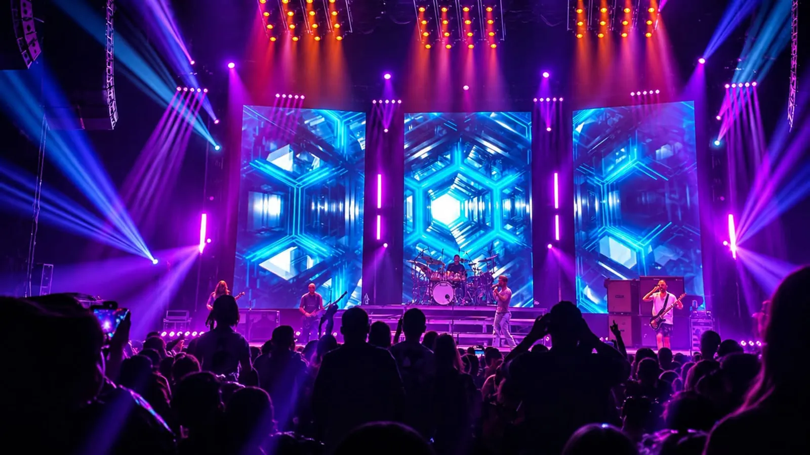

dvLED Total Cost of Ownership: Power, Spares, Maintenance and Replacement
By David
dvLED total cost of ownership is the lifetime cost of a direct-view LED video wall, not the cabinet price on the quotation. The cost stack that actually decides whether you have the lowest cost of ownership is power, spare parts, maintenance labour, and the replacement cycle, together with the structure, control hardware and downtime those choices create. A cheaper screen that draws more power, is slow to service, or cannot be repaired in a few years is rarely the low-TCO option.
This guide is the ownership model for a dvLED wall: what to put in the spreadsheet, which lines scale with pitch and brightness, and the questions to ask before you sign. For the definition of dvLED itself, use the dvLED video wall pillar. To size pitch and resolution for a given wall, use the LED display calculator. Neither tool invents an energy tariff or a payback period; those have to come from your site and your utility rate.
The dvLED Cost Stack: Power, Spares, Maintenance and Replacement
Start with four operating lines, then add the capital lines that support them. If a supplier cannot answer these in writing, the quotation is not a total-cost figure.
| Cost line | What to put in the model | What usually lowers it |
|---|---|---|
| Power (energy) | Average power at the operating brightness, times area, times hours per year, times the local electricity tariff | The coarsest pitch that still meets viewing distance; automatic brightness control; an efficient driver and power design |
| Spares | An on-site stock of batch-matched modules, power supplies and receiving cards, plus the reorder price and lead time | A standardised cabinet platform and a manufacturer that will commit to part availability in writing |
| Maintenance | Labour per visit, including access equipment, multiplied by the planned service interval | Front-service cabinets, so a technician can swap a module without scaffolding or a room closure |
| Replacement cycle | When modules, drivers or the cabinet format will no longer be available, and the cost of a partial upgrade versus a full rebuild | A supportable platform and a refresh plan agreed at purchase, not at the first failure after warranty |
Around that stack sit structure and installation, power distribution, control and processing hardware, and downtime. Those lines belong in the same model; they are detailed in the sections below. Annual energy cost is simple arithmetic once the inputs are honest, but the tariff and the operating hours have to be yours. This article does not publish sample electricity prices or payback years, because those figures would be invented for a site we have not measured.
The lowest cost of ownership is the option that stays the cheapest after those lines are filled in, not the lowest bid. The sections that follow explain what drives each line, how fixed installations differ from rental fleets, and how to compare suppliers on the same basis.
What Actually Determines LED Display Total Cost of Ownership
Total cost of ownership is the sum of every cost the installation incurs from specification to retirement, normalised so that options with different lives can be compared fairly. It is determined less by the headline price than by three early decisions: the pixel pitch and brightness, the environment the display works in, and how easily it can be serviced. Those choices lock in energy draw, spare-part demand, and service labour for years.
A small purchase discount rarely outweighs a decision that raises power consumption or repair cost every month of the display's life. The table below maps each line, what drives it, and how it behaves across the life of the screen. Read it as a checklist: any line a supplier cannot answer is a line the buyer is carrying blind.
| Cost Line | What Drives It | How It Behaves Over Life |
|---|---|---|
| Screen hardware | Pitch, area, brightness, component grade | Fixed at purchase; sets many downstream costs |
| Structure and installation | Wall type, height, wind load, indoor vs outdoor | One-time capital plus periodic inspection |
| Power and distribution | Connected load, redundancy, cable runs | Sized at design; costly to retrofit later |
| Control and content hardware | Resolution, processor, players, software | Occasional refresh; licences recur |
| Spares and inventory | Duty cycle, access, part availability | Up-front stock, then reorder cycle |
| Energy | Average power, duty cycle, local tariff | Compounds every month of life |
| Maintenance labour | Access design, site conditions, contract terms | Recurring; lower with front access |
| Downtime | Criticality of the screen, response time | Event-driven; can dominate for critical screens |
| Residual / disposal | Part commonality, market demand, decommissioning | Reduces net cost at end of life |
Two projects of identical screen area can differ in total cost by a large multiple simply because one runs around the clock in a coastal, high-brightness location and the other runs business hours indoors. The rest of this guide works through the lines in order of leverage, starting with the ones buyers most often leave out.
Figure 1 shows an indoor LED installation.

The Cost Lines Beyond the Purchase Price
At least eight lines sit outside the panel price, and buyers routinely omit three or four of them: structure, power distribution, and spare stock. Each is a genuine project cost, and each is far easier to control before the contract is signed than after the display is on the wall.
Installation and structure cover the steel frame, truss, wall reinforcement, wind-load engineering, and the labour to fix it all in place. Power and distribution cover the dedicated circuit, distribution board capacity, surge protection, and cable runs sized to the connected load. The control system covers sending cards, receiving cards, processors, players, signal cabling, and software, and commissioning covers alignment, calibration, content testing, and operator training.
Spares and inventory, energy, maintenance labour, downtime, and end-of-life value complete the list. A useful test is to ask a supplier to price an empty wall versus a working one: the difference is the part of the project a bare quotation ignores, and it is frequently the part that decides whether the budget holds.
✅ Structure and mounting
✅ Power distribution and protection
✅ Control, processing, and content hardware
✅ Spare parts and inventory
✅ Energy across the duty cycle
✅ Maintenance labour and access
✅ Downtime and lost service
✅ Residual, refresh, and disposal
Which Cost Lines Scale With Pixel Pitch, and Why the Increase Is Not Linear
Pixel pitch is the most non-linear variable in LED economics. Because the number of light-emitting dies per square metre rises with one over pitch squared, halving the pitch roughly quadruples the emitters, the driver channels, and the solder joints behind them. Cost therefore climbs far faster than the area suggests.
That density has consequences beyond the dies themselves. Tighter pitch forces more copper layers into the printed circuit board, more receiving and driver channels per cabinet, and longer calibration because every extra pixel must be matched for colour and brightness. Manufacturing yield also falls as the number of solder joints per square metre rises, since each joint is an opportunity for a fault. The same density raises thermal load per unit area, which can force a different enclosure, cooling path, and power design.
| Design Variable | Scales With | Why It Is Not Linear |
|---|---|---|
| LED dies per m2 | 1 / pitch squared | Halving pitch roughly quadruples the dies |
| Driver and receiving ICs | Emitter count | More channels to address per area |
| PCB layers and routing | Density and thermal load | Tight routing forces extra copper layers |
| Manufacturing yield | Solder joints per m2 | More joints means more fault opportunities |
| Calibration time | Pixel count | Matching more pixels takes longer |
| Thermal density | Packing density | Heat per unit area rises, changing the enclosure |
The practical rule is to choose the coarsest pitch that still meets the closest realistic viewing distance, then spend the difference on efficiency, service access, and spares. The pricing mechanics behind that trade-off are covered in the 2026 LED display price guide, and a fine-pitch reference platform is shown in the COB EF series.
Figure 2 shows an indoor LED installation.

How Brightness and Duty Cycle Compound Energy and Component Cost
Brightness raises cost twice over: once at purchase, because a brighter panel needs more emitters driven harder and a power design to match, and again every month, because energy scales with average power rather than with the peak figure printed on a specification sheet.
The energy line is simple arithmetic once the inputs are honest. Annual energy cost equals average power per square metre multiplied by screen area, multiplied by operating hours per year, multiplied by the local tariff. Peak power describes the electrical design and cable sizing; average power at the operating brightness describes the electricity bill. A screen that runs sixteen hours a day costs roughly twice as much to operate as the same screen running eight, so the duty cycle belongs in the model as an explicit assumption rather than a footnote.
Automatic brightness control lowers the average figure without changing perceived quality, since much of the day the display does not need its maximum output. When comparing suppliers, insist on the same operating hours and the same brightness setting for each option, or the energy line becomes an unfair comparison. The LED display calculator will not compute the electricity bill, but it will help you settle pitch and wall size, which are two of the inputs that drive power and spare density. The technology itself is defined in the dvLED video wall guide. A front-maintenance outdoor platform engineered for variable brightness, such as the D-PRO series, keeps that line under control over a long duty cycle.
Why Outdoor, Coastal, and High-Temperature Sites Carry a Higher Cost Base
Environment rewrites the cost model. Outdoor installations add wind and structural engineering, higher ingress protection, cooling, and surge protection; coastal and hot sites shorten component life, so spares and service visits rise even when the hardware price is identical to an indoor unit.
Salt air, humidity, and thermal cycling attack connectors, power supplies, and seals, so the maintenance interval shortens and cleaning becomes a scheduled cost rather than an occasional task. High ambient temperatures reduce the headroom available to dissipate heat, which in turn affects driver life and colour stability. The right response is not a cheaper cabinet but a higher protection rating and a service plan matched to the site, both of which belong in the model from the first quotation.
Indoor installations are not immune either: dusty, hot, or vibration-prone venues shorten life in the same direction. Whichever the site, ask for average power, protection rating, expected service interval, and the spare-parts list for that exact model, and confirm the manufacturing and testing behind it on the factory page.
Fixed Installation vs Rental and Touring: Two Different Cost Structures
A fixed installation spreads cost across steady, long operation; a rental fleet spreads cost across thousands of rig, derig, and transport cycles. The same panel area can be the right buy for one and a poor fit for the other, because the dominant wear mode, and therefore the dominant cost line, is entirely different.
| Cost Dimension | Fixed Installation | Rental and Touring |
|---|---|---|
| Dominant capital line | Structure, power, control | Light cabinets, flight cases, rigging |
| Design priority | Thermal and structural longevity | Weight, latch speed, impact resistance |
| Duty cycle | Long, steady hours | Intense bursts, repeated rigging |
| Dominant wear mode | Aging, dust, thermal cycling | Mechanical fatigue from handling |
| Spares strategy | Small matched stock | Larger travelling stock, fast swap |
| Service model | Scheduled preventive visits | On-site crew, module swap on show day |
| Residual value | Retained at one venue | Utility measured across many jobs |
| Main TCO driver | Energy and structure | Handling, logistics, repair turnaround |
For a rental operator, a cabinet that is marginally cheaper but heavier or slower to rig loses money at every load-out through added labour and transport weight, and a module that cannot be swapped in minutes becomes a show risk. For a fixed owner, that same cabinet may be irrelevant and a lower-power, higher-durability panel will win on the energy and service lines instead. So the same brief can resolve to different platforms, which is why the S series is specified differently for touring duty than for permanent mounting.
Installation, Structure, and Site Readiness
Structure and installation are frequently the largest single line omitted from a bare quotation. A wall that looks flat may need reinforcement, an outdoor frame needs wind-load calculations and steel, and a high wall needs access equipment for every future service visit.
Site readiness is part of the same cost: power must reach the display position, the building supply must carry the connected load, and there must be a safe route for installation and for later maintenance. Buyers should request the structural and installation scope in writing, including whether commissioning is handled remotely by the factory, by an on-site technician, or by a local integrator. That single answer can move the budget by a large margin, so it belongs in the comparison before any supplier is shortlisted.
Power Distribution, Control, and the Hardware Buyers Forget
The panel is one hardware line among many. A working system also needs the distribution board and breaker sized to the load, surge protection, sending and receiving cards, a video processor, signal cabling, control software, and often a content player. Any one of these, missing, blocks commissioning.
The safeguard is a complete bill of materials with model numbers and quantities, not a lump-sum line. A missing receiver card or processor can leave a fully delivered screen dark, and the replacement usually arrives on expedited freight at expedited cost. Ask the supplier to list every item between the power source and the LED, and to state which are included and which are the buyer's scope. Standardised platforms, such as the ranges summarised in the product series overview, reduce this risk because parts are shared across models and remain orderable years later.
Spares, Inventory, and the Cost of an Unavailable Part
Spare parts are a small line that becomes a large one when the parts cannot be sourced. A screen that cannot be repaired because a module, driver, or power supply has been discontinued carries a hidden replacement cost, so buyers should hold a modest matched stock and confirm how long each component will remain available.
The size of that stock follows from duty cycle and access rather than from a fixed rule: a screen that is hard to reach or runs continuously warrants more on-site spares than an easily serviced indoor unit. Replacement modules should also be calibratable to match older batches, because colour and brightness drift can make a technically compatible part visually unsuitable. The mechanics of rated life and drift are covered in the LED display lifespan guide.
Maintenance Labour, Access Design, and the Cost of a Service Visit
Maintenance cost is dominated by access, not by parts. A screen that one technician can service from the front with a single module swap costs far less over its life than one that needs scaffolding, a corridor closure, and a crew, and that difference is a design decision made at purchase.
Front-service cabinets, standardised fasteners, and modules that can be swapped without special tools all shorten the labour line. Preventive service at sensible intervals, covering cleaning, cable and connector inspection, calibration, and power-supply testing, prevents small faults from becoming dark areas or dead cabinets. When suppliers are compared, the labour implications of their cabinet design belong in the scoring alongside price, exactly as set out in the quote comparison guide.
Downtime: The Cost Line That Can Outweigh the Hardware
Downtime is the hardest line to estimate and sometimes the largest. A dark advertising screen loses revenue, a failed information board disrupts operations, and a stadium perimeter that fails on camera damages a sponsorship, so where a screen is critical this line can outweigh every other.
Estimate it as the cost per hour of a dark screen multiplied by the expected hours of failure per year, then compare how different designs change that figure. Redundancy in power and signal, front access for a fast swap, local spares matched to the batch, remote monitoring that reports temperature, power, and signal before a failure becomes visible, and a service response matched to criticality all reduce the number. Remote monitoring does not remove physical inspection, but it lets the owner prioritise visits and catch repeating faults early.
✅ Redundant power and signal paths
✅ Front service access for a fast module swap
✅ Local spares matched to the screen batch
✅ Remote monitoring with fault alerts
✅ Service response terms set by criticality
Residual Value, Refresh, and End-of-Life Cost
Few displays run unchanged to retirement. Content may shift from standard video to high-frame-rate camera work, a client may add a curved stage section, or a cabinet format may be retired. A refresh plan should identify which parts can stay in service and which must be replaced, because a supportable upgrade path lowers lifetime cost.
Where the controller, cabinet, and module format remain compatible with current products, a partial upgrade is shorter and cheaper than a rebuild. Where they are not, the residual value drops and the effective replacement cost arrives sooner. Standardised cabinets and widely supported control systems protect that value, and part availability after the warranty period is a question worth asking at the quotation stage rather than at the first failure.
Questions to Ask at the Quotation Stage That Change the TCO
Most of the total cost is decided before a supplier is chosen, and a short set of questions surfaces the lines that a bare price omits. Ask them in writing before shortlisting, and treat an evasive answer as evidence about the support that follows the sale.
| Question to Ask | Why It Changes the TCO |
|---|---|
| What is the average power per m2 at operating brightness? | Sets the energy line for the whole duty cycle |
| Is service front or rear access, and by how many people? | Determines the labour cost per visit |
| What structure and mounting are included? | Largest line usually missing from a bare quote |
| What control, processing, and player hardware is in scope? | A missing card or processor blocks commissioning |
| What is the spare-part price list and lead time? | Converts a fault into a fast or a slow repair |
| How long will modules, drivers, and power supplies stay available? | Predicts partial upgrade versus full replacement |
| Which certifications apply to this exact model and market? | Compliance gaps can stop installation or import |
| What failure response time is agreed? | Bounds the downtime line for a critical screen |
Use the answers to build one comparison table with a column per supplier. When the lines are laid out side by side, the option that looked most expensive on the panel price is often not the most expensive once energy, access, spares, and downtime are added.
Total Cost vs Lowest Bid: When the More Expensive Option Is Cheaper
The cheapest quote is rarely the lowest cost, but the most expensive screen is not automatically the best value either. The goal is to spend where a choice lowers lifetime cost and to save where it does not, which usually means paying a small premium for efficiency, access, and support.
| Decision | Looks Like | Often Costs Over Life |
|---|---|---|
| Coarse pitch stretched past viewing distance | Cheap per m2 | Poor readability drives early replacement |
| Higher-efficiency driver and power supply | Small purchase premium | Lower energy every month |
| Front-service cabinets | Small premium | Cheaper, faster service visits |
| Matched spare stock bought up front | Up-front outlay | Avoids long downtime and air-freight parts |
| Brightness matched to the site | Lower specification | Avoids wasted energy and excess heat |
| Standardised cabinet platform | Comparable price | Easier spares and partial upgrades |
| Full certification package | Added cost | Avoids import or installation delay |
The weakest savings are usually the ones buyers chase hardest: cutting pitch finer than the viewing distance needs, or adding brightness the site never uses, raises cost without improving the result. The reverse is also true, which is why order size and specification should be settled together, as the MOQ guide explains.
Building a Like-for-Like Comparison Across Suppliers
A comparison is only valid when the specification is held constant. A cheaper screen with a coarser pitch is not equivalent, and neither is one with a shorter warranty or weaker service terms, so normalise the requirement first and only then compare lifetime cost.
Convert every option to a cost per year, or to a total over a fixed window, so displays with different expected lives can be compared on the same basis. A short-lived cheap screen can otherwise look better than it is, because its replacement cost falls outside the window. Then test the result against a low, mid, and high case for energy price, operating hours, and failure rate: if one option wins in every case the decision is robust, and if the answer flips, the uncertainty itself is what the buyer should investigate before committing. The same normalised spreadsheet doubles as a negotiation document, as described in the quote comparison guide.
Common TCO Mistakes That Reverse the Right Decision
Most bad procurement decisions come from the same short list of errors, and each one makes a model look precise while hiding the cost that actually decides the outcome. Checking for them is quick and usually changes the answer.
- Comparing purchase prices instead of lifetime costs
- Using peak power instead of average power for the energy line
- Ignoring downtime where the screen is business-critical
- Comparing options with genuinely different specifications or lifetimes
- Leaving spares, structure, and control hardware out of the budget
- Building the model from a single set of assumptions with no sensitivity test
- Choosing a pitch or brightness the viewing distance never requires
Avoid those traps and the total cost of ownership becomes a decision tool rather than an after-the-fact explanation. To turn the model into a firm budget for a specific project, send the duty cycle and site conditions through the contact page and request a line-by-line quotation that separates every cost line above.
FAQ
Related Articles
For outdoor examples of how brightness and access show up in the cost stack, see the COB EF series (outdoor COB, 3,000 nits, published on the product page) and the D-PRO series (front-maintenance outdoor SMD).
Build a dvLED Cost Model for Your Site
Send the duty cycle, viewing distance and site conditions. We will help you list power, spares, maintenance and replacement on a line-by-line quotation. Use your own electricity tariff; we will not invent a payback figure.
Request a Project BudgetChat on WhatsApp